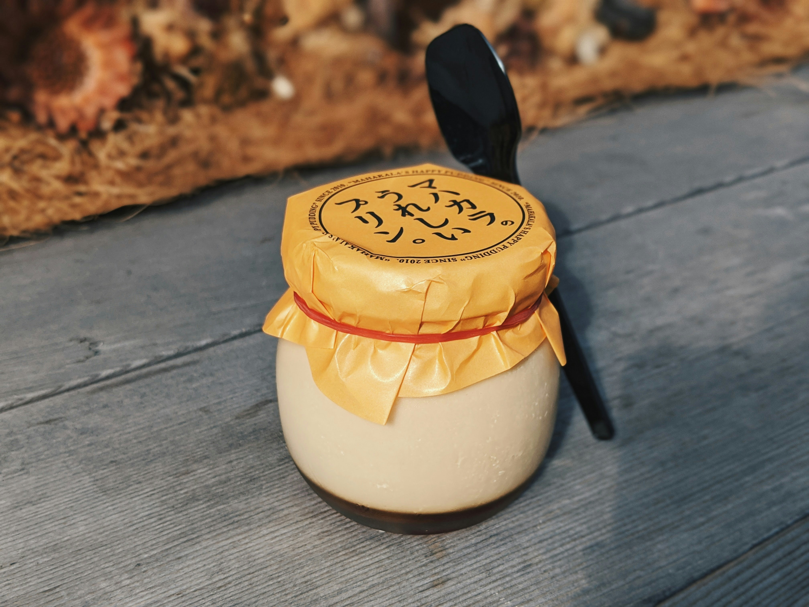

Homemade Vanilla Pudding

Description
I love pudding and this homemade pudding with vanilla is a rich and
delectable dessert. There is no substitute for the butter!
Ingredients
- 1/3 cup white sugar
- 3 tablespoons cornstarch
- 1/2 teaspoon salt
- 2 cups whole milk
- 1 tablespoon butter
- 1 teaspoon vanilla extract
Steps
-
Mix sugar, cornstarch, and salt together in a medium heavy-bottomed
saucepan.
-
Gradually whisk in milk until smooth. Bring to a boil over medium heat,
whisking often, about 8 minutes. Once mixture comes to a boil, cook,
whisking constantly, for 1 minute.
- Remove saucepan from heat, and stir in butter and vanilla.
-
Spoon pudding evenly into 5 serving dishes. Let stand until slightly
cooled, about 10 minutes. For best results, cover with plastic wrap
pressed directly on pudding to prevent a skin forming and refrigerate
until chilled and set, about 2 hours.
- Serve and enjoy
Home Page